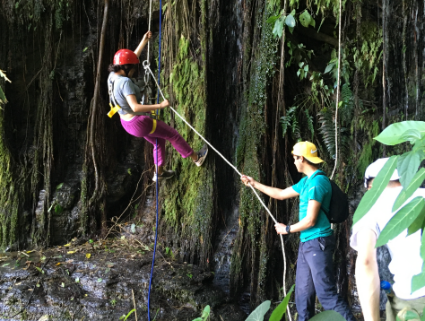
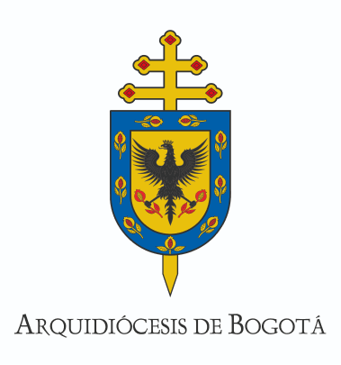
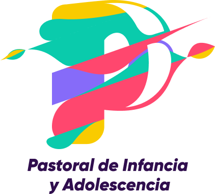
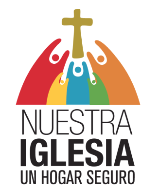

Desde el amor y la pasión por Colombia, Campo Aventura se enraíza en la identidad cultural y la importancia
de la familia. Aquí, exploramos los sueños y cómo transformarlos en realidades desde la misma infancia. La
naturaleza, la oración, el deporte, el arte y la música se convierten en nuestras herramientas para crear
momentos de reflexión profunda y diversión inigualable.



Campo Aventura,
Un espacio seguro
Contamos con rigurosos protocolos y manuales de conducta que garantizan un entorno seguro para todos los
participantes. Nuestros dirigentes reciben formación continua y actualizaciones sobre las normas y prácticas
relacionadas con el cuidado de menores.
Estamos plenamente comprometidos en la creación y mantenimiento de espacios seguros para todas las personas
que forman parte de nuestro proyecto. La confianza es fundamental para nosotros, y trabajamos
incansablemente para asegurar que todos los niños, niñas y adolescentes, vivan una experiencia enriquecedora
y segura en Campo Aventura.
“La iglesia tiene que ser el hogar de todos, pero un hogar seguro, donde NADIE DUDE, que sus niñas, niños, sus
jóvenes y adultos vulnerables están seguros. Esa es la prioridad”
Papa Francísco